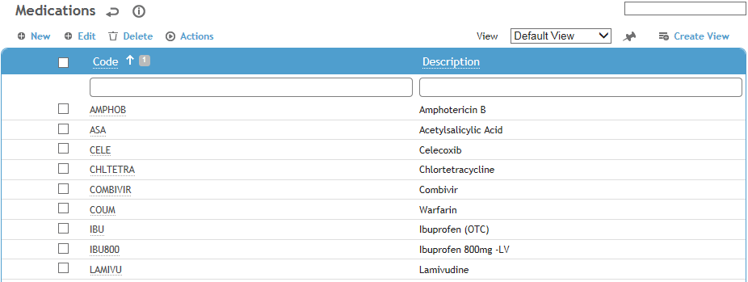
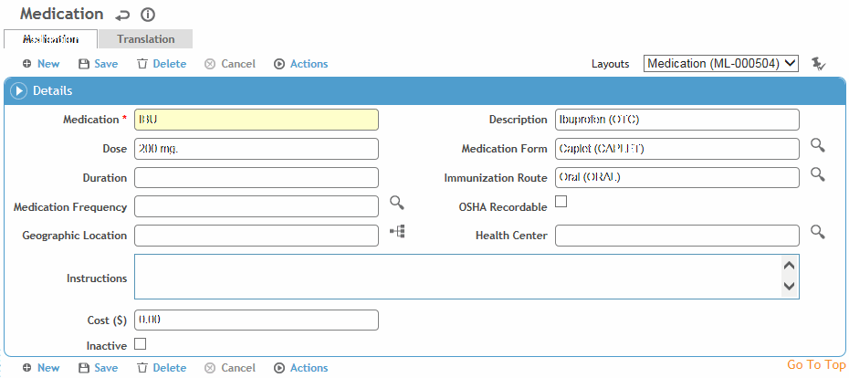

This table is used by several modules to identify medications.
To filter the list of records, enter a few characters in one or more of the fields at the top followed by an asterisk, then press Enter.

Click a link to edit, or click New.

Enter a Code and Description.
Select the Geographic Location and Health Center.
To have picklists for this table only show values corresponding to the user’s geographic location, ensure the "Filter Look-up Tables by Geographic Location" system setting is enabled.
Optionally, define the default Dose, Form, Duration, Route, and Frequency, any Instructions, and Cost.
Indicate if this medication is OSHA Recordable.
The Medication Lots tab displays any existing records from the MedicationLot table; to add a new lot, click New.
To define inventory thresholds for a particular health center, click New on the Linked Health Center tab, and choose the health center and enter the Threshold Inventory that this health center should maintain of this medication.
Click Save.